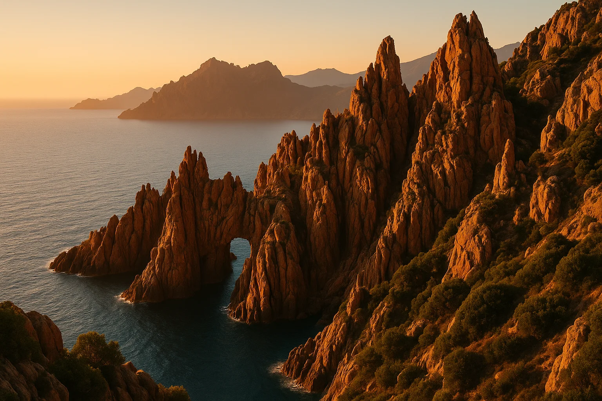
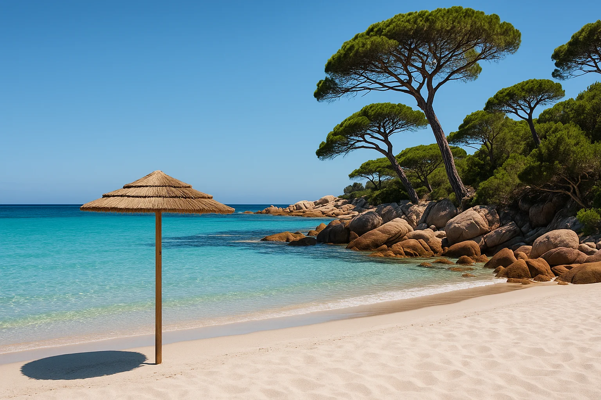
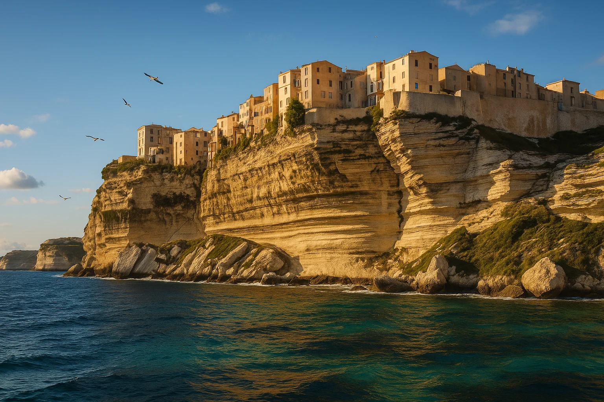
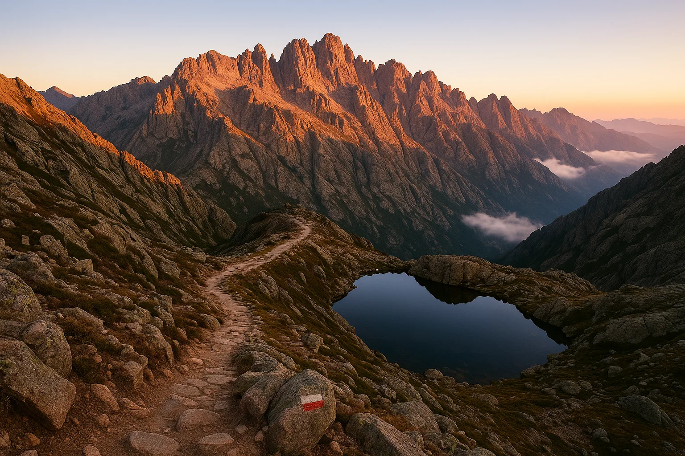
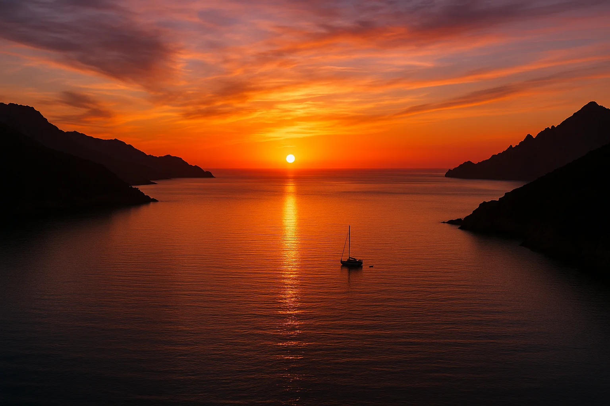
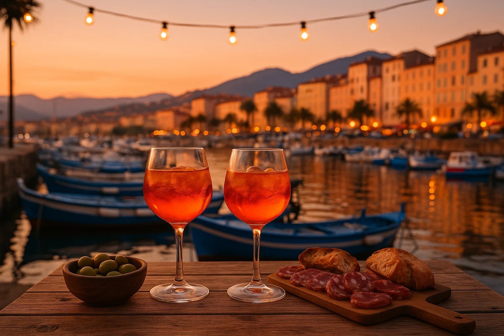

Danmark är fint. Blåsten är karaktärsdanande, fjorden är uppfriskande och larverna håller oss alerta. Men efter moget övervägande har Drömkommissionen enhälligt beslutat: 2027 byter vi Nordsjöblåst mot Medelhavssol. Här är sidan att öppna när regnet står som spön i backen över Helligsø.
Vetenskaplig jämförelse
Framtagen av Drömkommissionens meteorologiska utskott. Helt opartisk.
| 🇩🇰 Danmark 2026 | 🇫🇷 Korsika 2027 | |
|---|---|---|
| Vatten i augusti | 16–18 °C, »uppfriskande« | ca 25 °C, som ett ljummet badkar |
| Vind | det blåser nästan alltid lite | lagom bris till aperitifen |
| Högsta topp | klitten, ca 30 m ö.h. | Monte Cinto, 2 706 m ö.h. |
| Stranden | delvis stenig, packa badskor | vit sand, badskor valfritt |
| Sol i augusti | mellan skurarna | över 300 soltimmar |
| Larver | larven från helvetet härjar i Odense | inga larver rapporterade |
| Efterrätt | softice i Hurup | gelato, två kulor obligatoriskt |
Anmärkning: Danmark är fortfarande bäst 2026. Men sen. 🤌
Bilder att drömma sig bort till under regniga Danmarksdagar
Vykort från framtiden, med hälsningar från Drömkommissionen.






Datum: augusti 2027. Exakt vecka avgörs av färjetidtabeller, flygpriser och Håkans kalender. Drömkommissionen ansvarar ej för hemlängtan till Limfjorden (§ 6). Klagomål på det danska vädret hänvisas till DMI.